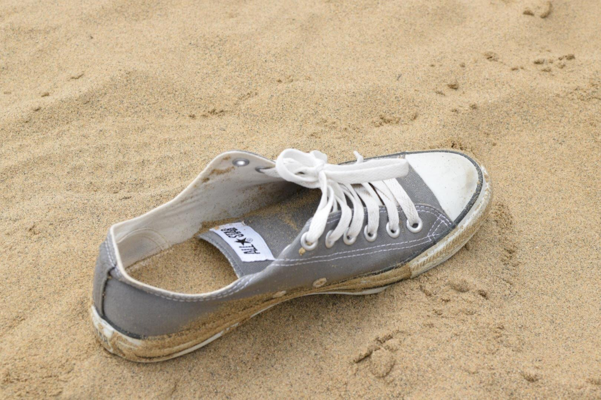

inviewサンプル
jsフォルダのjquery.inview_set.jsや、cssフォルダのinview.cssで内容の変更や追加ができます。
新規で作成されるページにもアニメーション効果を使いたい場合、当ページのhtml側下部にある、
<!--パララックス（inview）-->
<script src="https://cdnjs.cloudflare.com/ajax/libs/protonet-jquery.inview/1.1.2/jquery.inview.min.js"></script>
<script src="js/jquery.inview_set.js"></script>
を同じ場所にコピペして下さい。これらのタグがないとアニメーションは動きません。
また、長期間利用していると、inviewのバージョンが古くなって動かなくなる可能性もあります。その際は「CDN inview」などで検索しなおしてみて下さい。
▼ upスタイル
使いたい要素にclass="up"を指定すれば以下のような動作になります。

▼ downスタイル
使いたい要素にclass="down"を指定すれば以下のような動作になります。
▼ transform1スタイル
使いたい要素にclass="transform1"を指定すれば以下のような動作になります。
▼ transform2スタイル
使いたい要素にclass="transform2"を指定すれば以下のような動作になります。
▼ transform3スタイル
使いたい要素にclass="transform3"を指定すれば以下のような動作になります。
▼ blurスタイル
使いたい要素にclass="blur"を指定すれば以下のような動作になります。